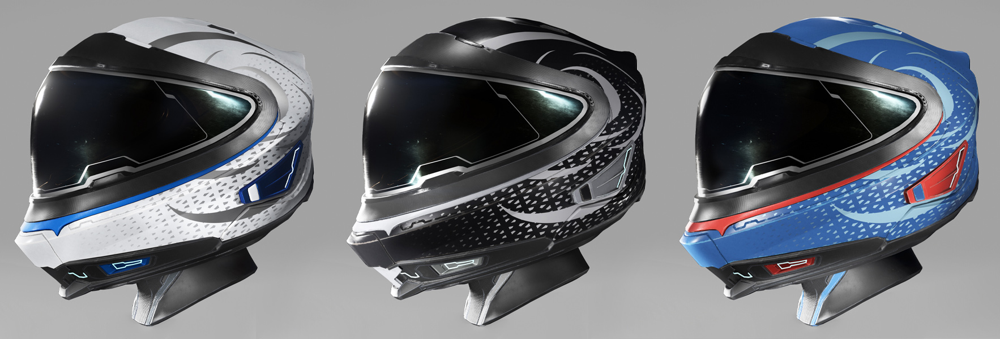

Inspired by the sleek stylings of the 100 series, the Giocoso is a helmet worthy of Origin Jumpworks. It features a wide face shield to provide excellent peripheral vision and a special internal air flow system to dissipate heat and humidity. In a nod to the 100 series, the back of the helmet slyly integrates the iconic shape language of the ship's tail into the form.
The helmet comes in three different editions, each matching the color of one of the 100 series ships.